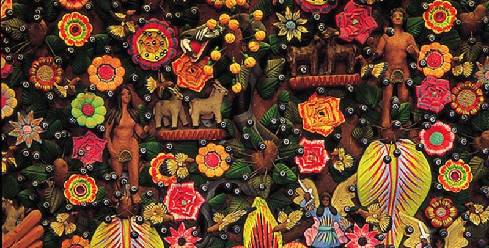
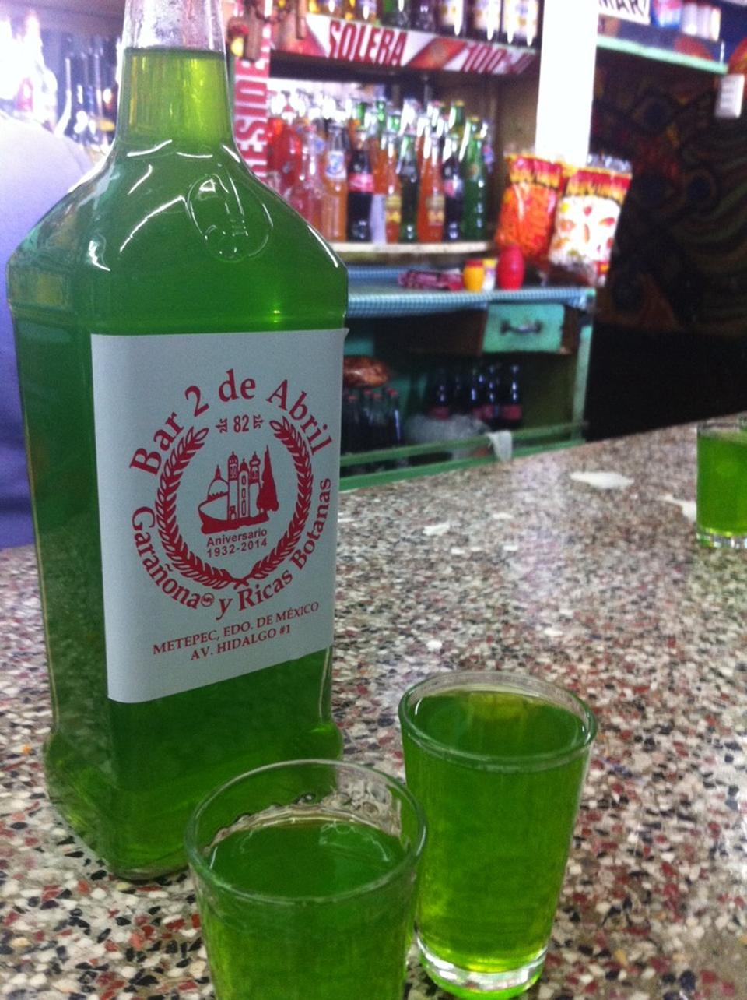
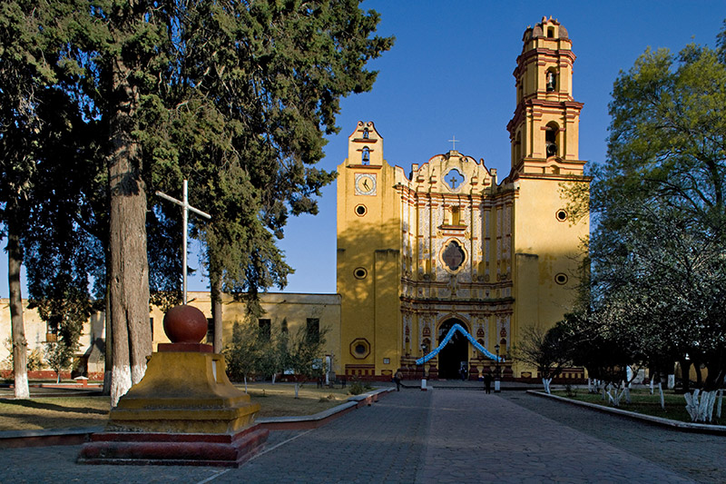

Tradiciones de metepecEl 21 de marzo se realizará el tradicional Ritual del Fuego Nuevo, en el cerro de los Magueyes en Metepec, Estado de México. De acuerdo con la tradición el cerro de los Magueyes es el principal centro de energía pues concentra los 4 elementos; Agua, tierra, fuego y aire). Desde temprano, los grupos indígenas se reúnen para realizar su tradicional festejo como parte de un ritual acompañado de danza y poesía, reviviendo la historia de un pueblo, que venera al sol para que este salga por otros 52 años, tiempo en el que el calendario civil y el lunar coinciden durante el año nuevo, de acuerdo con las creencias teológicas de los antiguos indígenas. |
|
|  | |
Gastronomía de metepecCome una deliciosa ensalada de acociles, barbacoa o tacos de carnitas. La garañona es una de las bebidas típicas de Metepec. Se trata de un compuesto de hierbas medicinales, que algunos han llamado afrodisíacas, de ahí la expresión: ¡Vamos a ponernos garañones! Metepec tiene curados de pulque de frutas, que se pueden disfrutar en las tranquilas noches de locales del centro. |
|
|  | |
Arquitectura de metepecEn la plaza central de este Pueblo Mágico, el Parque Juárez destaca “La Sirena de Metepec: La Tlanchana”, una antigua diosa del agua que, según la leyenda, se aparecía en los manantiales cercanos. Al pie del Cerro de los Magueyes está la Iglesia de San Juan Bautista del siglo XVI, una estructura barroca donde se venera al santo patrono de los cultivos: San Isidro Labrador. El Ex Convento de San Juan Bautista está ubicado a un costado de la parroquia, construcción que se caracteriza por su majestuosa decoración con bordes detallados en barro, una linda torre y campanario, lo que da vida a la fachada. |
|
|  |